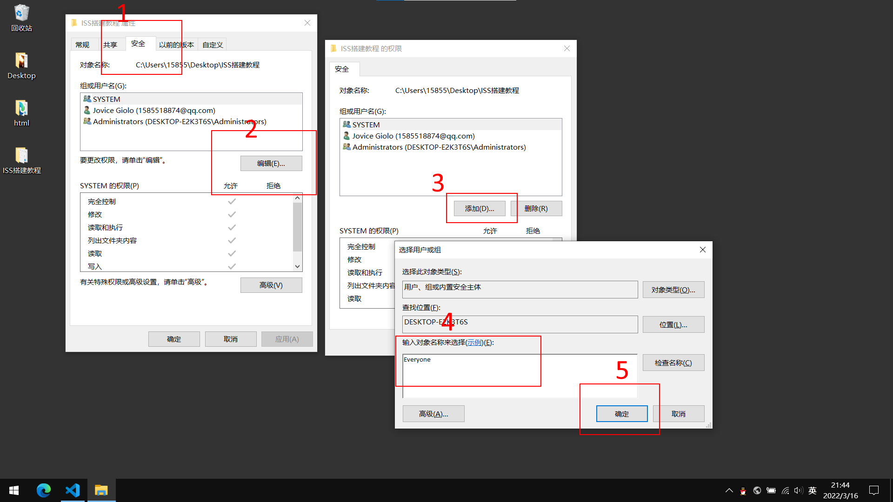
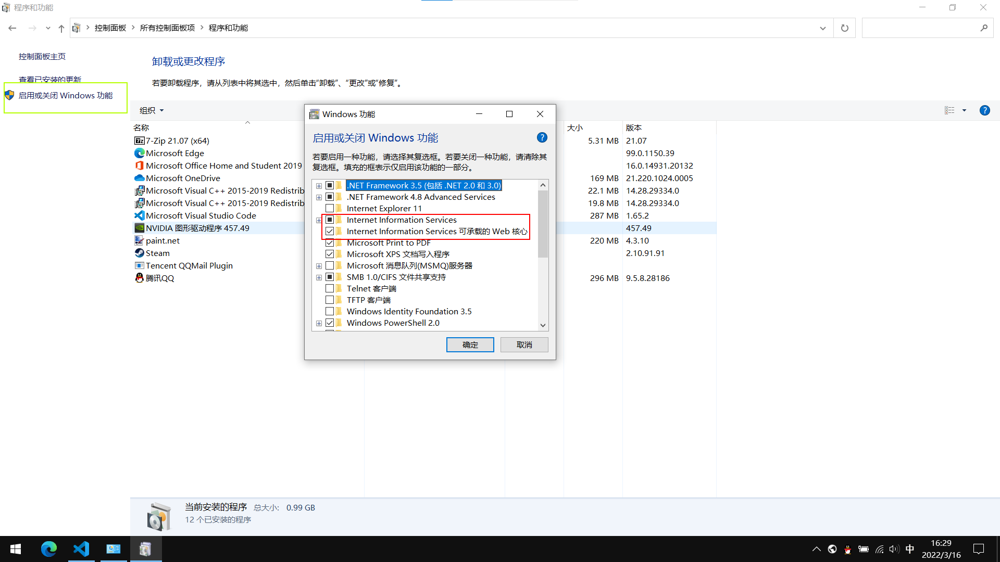
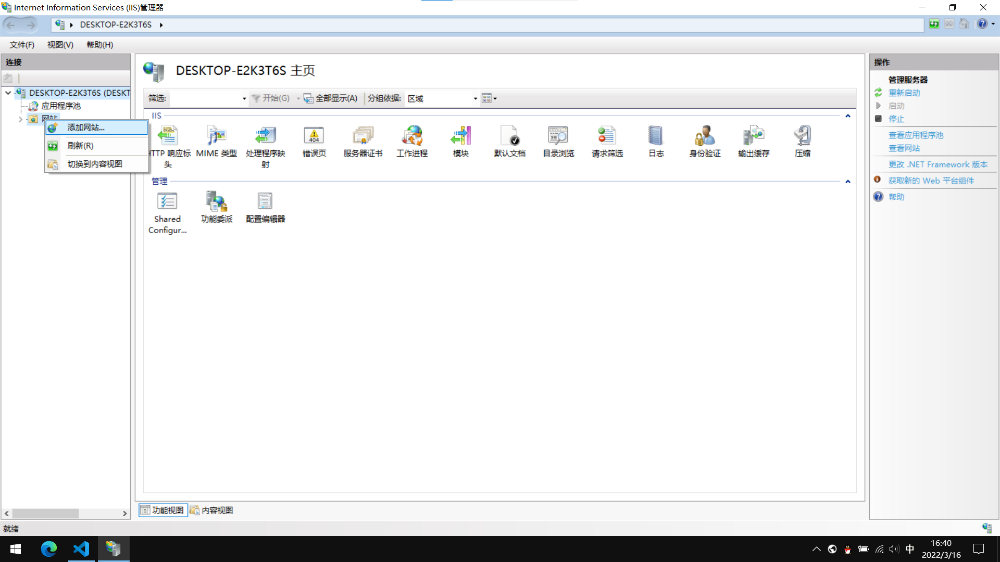
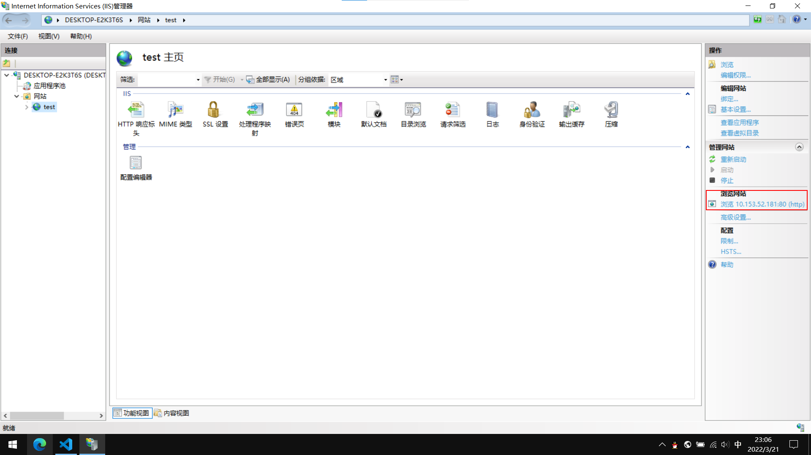
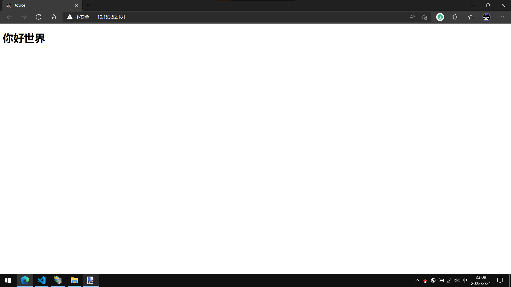

因为本地调试html文件会有一些标签无法使用, 比如<track>, <iframe>,
因此尝试用windows系统自带的 Internet Information Services 管理器(以下称IIS)来搭建一个服务器, 以便使用http在内网中进行本地调试.
找到要进行调试的文件夹, 右键其 > 属性 > 安全 > 编辑 > 添加 > 填入Everyone > 确定
控制面板 > 程序和功能 > 启用或关闭Windows功能 > 勾选红框中的两个项目
Win + S 搜索 IIS, 打开应用
点开左边的项目, 右键网站, 点击添加网站
网站名称随意, 应用程序池选择DefaultAppPool, 物理路径选择要调试的文件夹, IP地址随便选一个, 端口随便填(只要别和已有的相同ip地址的网站的端口重复)
点击确定, 创建成功
再点左边的浏览网站, 测试一下
 大功告成